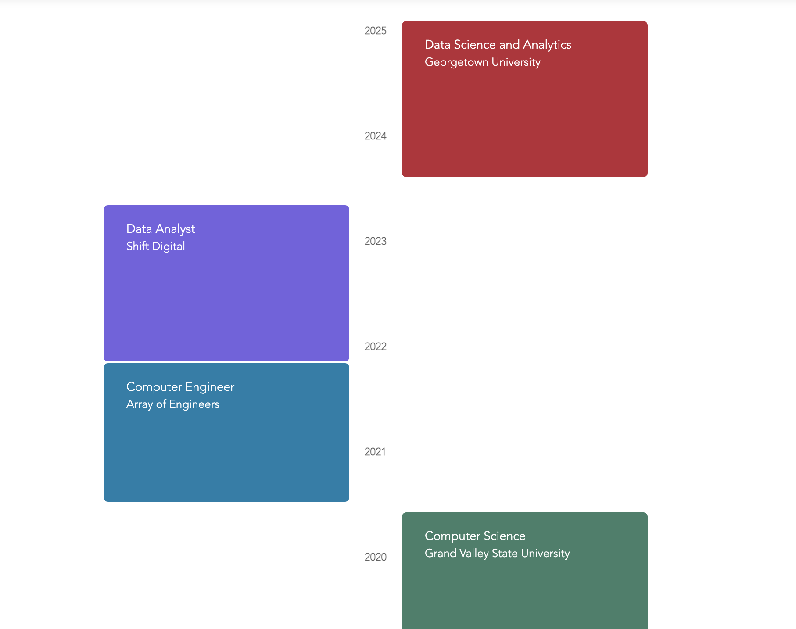

Hello! I’m originally from Dhaka, the vibrant capital city of Bangladesh. I came to the US in 2015 in pursuit of my bachelor’s degree in Computer Science and lived in West Michigan before moving to Northern Virginia in 2022. Before joining Georgetown, I worked as a Computer Engineer, and then as a Data Analyst.
I am currently pursuing a Master’s of Science in Data Science & Analytics at Georgetown University. As I progress in my career, my passion lies in leveraging tailored data and algorithms to solve intricate business problems and communicating complex insights to non-technical stakeholders. Although I am not unfamiliar with the realm of software development, I was quite new to data analysis before I started my role at Shift Digital as a Data Analyst. I learned a lot of practical skills that are prevalent in the digital marketing industry. Being a part of the DSAN program has introduced a lot of theoretical and statistical concepts and I am looking forward to continue on this journey and grow my knowledge even further.
I love spending time in charming cafes and exploring new cuisines. During my downtime I enjoy reading, painting and watching movies/TV shows.
Quick Summary
Here’s a quick snapchot of my professional journey so far:

For the longer/more detailed version click here 👉🏽 Download Resume
🎓 EDUCATION
Georgetown University (GU)
Master of Science in Data Science and Analytics | GPA: 4.0
Washington, D.C.
Aug 2023 - May 2025
Coursework:
Probabilistic Modeling and Statistical Computing, Database Systems and SQL, Advanced Data Visualization, Data Ethics and Policy, Computational Linguistics, Machine Learning App Deployment, Digital Storytelling, Big Data and Cloud Computing (TA), Applied Generative AI (Lead TA)
Leadership & Activities: Social Committee Member & Lead Mentor in the Data Science and Analytics program
Grand Valley State University (GVSU)
Bachelor of Science in Computer Science
Grand Rapids, MI
Aug 2015 - May 2020
💼 WORK EXPERIENCE
Shift Digital, Delivery and Software Team
Data Analyst
Birmingham, MI
Nov 2021 - May 2023
✔️ Improved data accuracy by 25% across 10+ enterprise projects by optimizing big data ETL processes
✔️ Worked with cross-functional teams to design scalable data architecture, delivering actionable findings to senior executives
✔️ Streamlined operations for 12 high-value clients and saved 15 hours weekly by automating billing data processing
✔️ Managed data migration and transformation within Databricks, creating efficient pipelines for business-critical insights
✔️ Leveraged SQL and Python within PySpark to transform raw data into cleaned, analysis-ready datasets
✔️ Enhanced data visibility with interactive dashboards, enabling faster decisions for key stakeholders
✔️ Crafted technical proposals aligned with project scope and business goals, achieving near 100% customer approval rate
Array of Engineers
Computer Engineer
Grand Rapids, MI
Jul 2020 - Nov 2021
✔️ Verified Airbus A350 avionics software using DOORS and Ansys SCADE, ensuring aerospace industry compliance
✔️ Improved user experience by optimizing web app features with AngularJS, increasing client retention by 25%
✔️ Introduced modular workflows for software testing, enhancing adaptability and achieving 98% on-time delivery
✔️ Conducted A/B testing on web app features, identifying improvements to enhance functionality and usability
✔️ Led GitHub code reviews across a multidisciplinary team, mitigating critical issues early in the development process
SKILLS
Programming: Python, SQL, R, Java, C++
Machine Learning: Scikit-learn, TensorFlow, PyTorch, XGBoost
Data Visualization: Tableau, Plotly, Seaborn
Big Data & Cloud: Apache Spark, Databricks, AWS Sagemaker
NLP: spaCy, Hugging Face Transformers, BERT
Databases: MySQL, PostgreSQL, MongoDB, Snowflake
Tools: Docker, Flask, Git, Quarto, CI/CD pipelines
Statistical Methods: A/B Testing, Regression, Bayesian Analysis